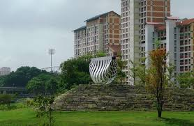
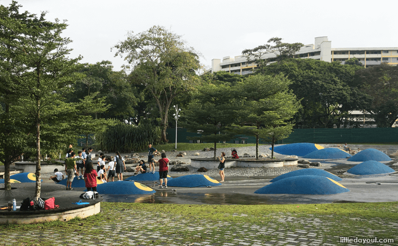
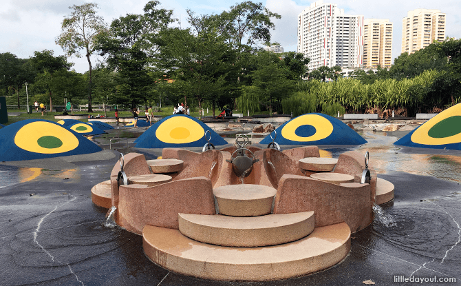
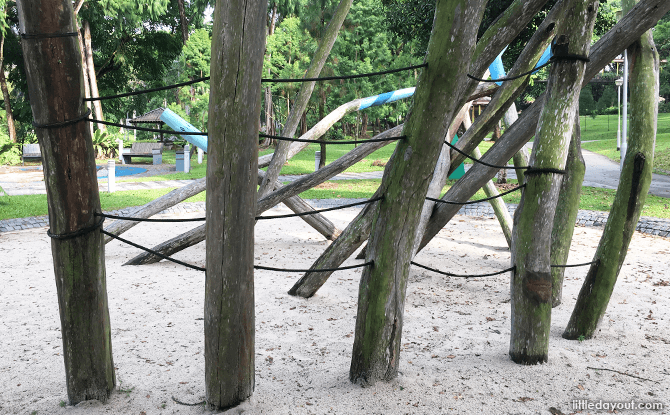
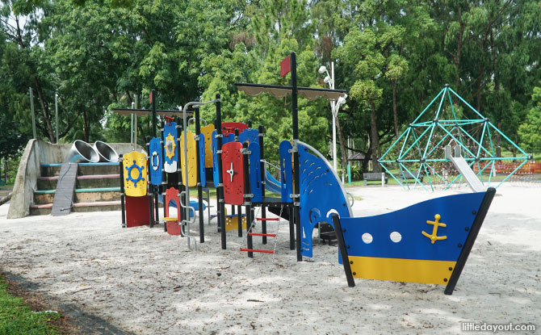
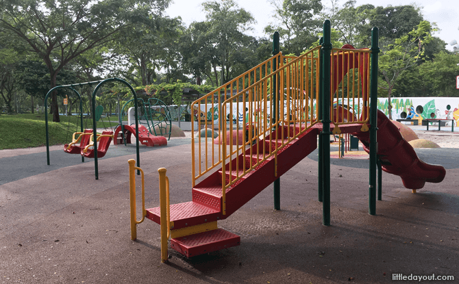
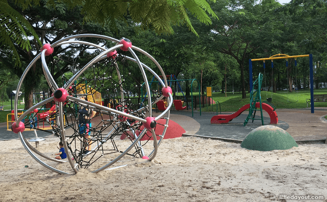
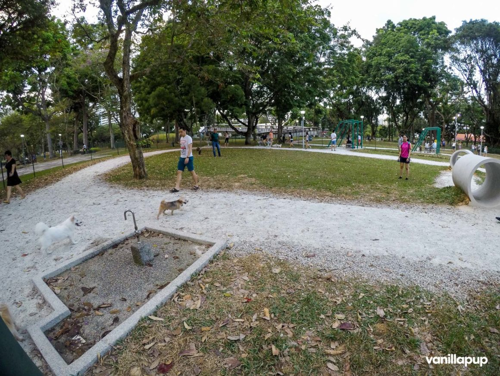
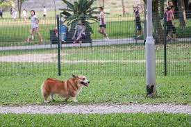

Bishan-Ang Mo Kio Park is popular with nearby residents for recreational activities. It has plenty of open spaces for outdoor activities in the park, as well as dedicated spaces for gatherings and community events, picturesque ponds and a dog run.
An iconic feature of Bishan-Ang Mo Kio Park is the naturalised river meandering through it. Aquatic animals and birds can usually be spotted along the three-kilometere waterway. Visitors can walk down the gentle river banks to get closer to the water; but during heavy rain, the parkland next to the river doubles up as a conveyance channel and carries excess water downstream.
An award-winning sculpture, An Enclosure for a Swing by Kelvin Lim Fun Kit can be found at the top of a mound which is created by stacking the concrete slabs from the original canal. The top of the hill offers a good view of the entire park.
There are three playgrounds within Bishan-Ang Mo Kio Park: the Water Playground, the Adventure Playground and the Inclusive Playground. The Water Playground and Adventure Playground are located at the Pond Gardens half of the park, closer to Upper Thomson Road while the Inclusive Playground is found at the River Plains half of the park.
 The Water Playground consists of channels of flowing water that goes around the playground through specially designed channels. It also has structures with little sprouts of water for kids to play with. It is only turned on from Thursdays to Sundays from 8am to 11am, and from 4pm to 8pm.
 The Adventure Playground consists of several unique play structures made out of wood, metal, climbing nets and concrete for kids to climb and play on. The newest addition to the playground is a pirate ship-design play structure and a series of children's swings. There is also a play area with equipment suitable for younger children away from the main section of the playground.
 The Inclusive Playground was designed in consultation with therapists and children with special needs, and includes wheelchair-accessible equipment for children such as a swing and merry-go-round.
 The dog run is a big enclosed area for dogs to run in. It is seperated into two; the smaller area is for the smaller sized breeds while the other larger area is for all breeds and sizes. There is also a water point for washing and for dogs to drink.